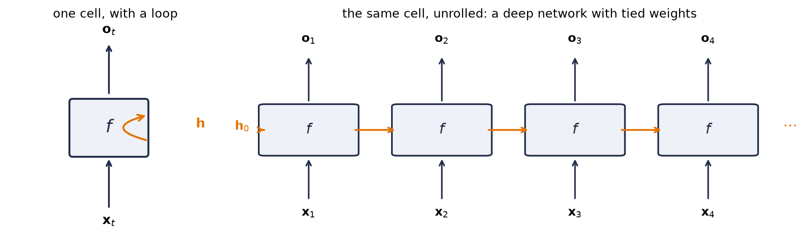
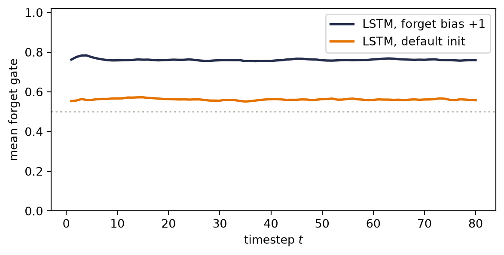
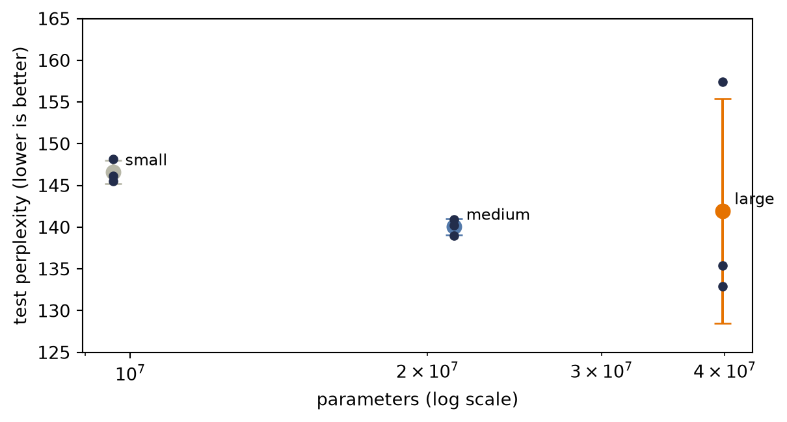

The autoencoder interlude promised you a one-shot encoder is not a variable-length process. We began with PCA’s closed-form projection, made its encoder and decoder learnable, and added nonlinearity so the reconstruction could bend. For a bounded object such as a \(28\times28\) image, that is a coherent contract: see the whole object, compress it to \(\vect{z}\in\mathbb{R}^k\), then decode.
Now let the object keep arriving. A four-token message and a four-thousand-token report are both squeezed through the same \(k\) numbers; the encoder cannot finish before the last item appears; the decoder cannot revisit evidence discarded from the code. Increasing \(k\) postpones the pressure, but it does not tell a fixed-input network how to accept an unknown number of pieces.
This part is about data that refuses the fixed-size contract. Text, audio, sensor streams, stock prices—they come one piece at a time, stop whenever they please, and carry meaning in the order of the pieces. We need a computation that can update as the evidence arrives. Recurrence asks us to make the carried summary learnable: rather than compressing once, the model learns how to revise its memory after each new piece.
Order deserves a moment, because the book has been here before with the opposite verdict. Chapter 6 shuffled every pixel with one fixed permutation and retrained the MLP to the same accuracy: because that coordinate map was invertible, the first-layer weights could absorb it. The trained MLP was still position-specific; it was not a bag model. Now shuffle the words of this sentence and read it back. For sequences, no single compensating remap preserves arbitrary order—order is most of the signal. We need models whose computation represents it explicitly.
10.1 Stretching the old toolkit
Before building anything new, the book’s habit: try what we own.
A window. Predict the next element from the last \(k\): slide a width-\(k\) window along the sequence and feed each snapshot to an MLP. This should feel familiar twice over: it is autoregression, and the sliding is Chapter 7’s one-dimensional convolution — locality, transplanted from space to time. Windows are genuinely useful (they power real forecasting systems), but they inherit locality’s blind spot: anything older than \(k\) steps ago does not exist. Widen \(k\) and the parameter count grows with it, yet no finite window survives the sentence “The company whose first-day price we recorded back in January finally …”. Context has no fixed radius.
A function per timestep. Then let the model change over time: learn \(f_1\) for step one, \(f_2\) for step two, each passing a summary forward. We first build this strawman carefully, because its failure names the cure. The parameter count now grows with sequence length; a length-500 essay needs 500 learned functions; and the model is non-stationary — it insists the rules of language at position 17 differ from the rules at position 18, when the whole point of language is that they do not.
You have watched this book face that exact configuration twice. A template for every image position was wasteful and brittle \(\rightarrow\) share the kernel across space (Chapter 7). A detector per location was the wrong prior \(\rightarrow\) share it (Chapter 8). The move is the same here, and it is the chapter’s one big idea: share the function across time,
one learned rule \(f\), applied at every step, carrying a running summary \(\vect{h}_t\) — the hidden state — from each step to the next. This is the book’s third weight sharing: across examples (every chapter since the first), across space (Part II), and now across time. Stationarity is to sequences what translation equivariance was to images: the same pattern means the same thing whenever it occurs.
NoteThe hidden state is a running memory — and a Markov claim
\(\vect{h}_t\) is whatever \(f\) chooses to remember about everything seen so far, compressed into one fixed-size vector. Feeding it back in makes a claim with a classical name, the Markov property: \(\vect{h}_{t-1}\) and \(\vect{x}_t\) together contain everything needed for the next step. Nothing else from the past gets a second look. That claim buys streaming (process tokens as they arrive), any sequence length (the loop doesn’t care), and — later in this chapter — the license to train on chopped-up chunks. Its price is that the memory is finite, and this part of the book ends when we finally refuse to pay that price (Chapter 12).
10.2 A network with a loop
The simplest choice of \(f\) is Chapter 3’s recipe with the state concatenated in: a linear map of \((\vect{h}_{t-1}, \vect{x}_t)\), squashed by a \(\tanh\):
the vanilla recurrent neural network. Three weight matrices total, reused at every step, regardless of whether the sequence has five tokens or five thousand. The readout \(\vect{o}_t\) produces logits — Chapter 2’s machinery — and you can collect one at every step (predicting each next character, labeling each word) or only at the end (classifying the whole sequence); both designs appear below.
Per the book’s habit, build the loop by hand, then verify against the framework:
Prepare the inputs and fixed settings for the example.
Implement the recurrence, written as the loop it is.
Report or visualize the measured result.
import torchimport torch.nn as nnimport torch.nn.functional as Fimport matplotlib.pyplot as plt# [1]torch.manual_seed(6050)V, H, T, B =8, 16, 12, 4# vocab, hidden, time, batchrnn = nn.RNN(V, H, batch_first=True)x = torch.randn(B, T, V)out_ref, _ = rnn(x)W_xh, W_hh = rnn.weight_ih_l0, rnn.weight_hh_l0b = rnn.bias_ih_l0 + rnn.bias_hh_l0h = torch.zeros(B, H) # h_0 = 0, the standard startouts = []# [2]for t inrange(T): # the loop IS the architecture h = torch.tanh(x[:, t] @ W_xh.T + h @ W_hh.T + b) outs.append(h)manual = torch.stack(outs, 1)# [3]print(f"manual loop vs. nn.RNN: max |diff| = {(manual - out_ref).abs().max():.1e}")
manual loop vs. nn.RNN: max |diff| = 1.2e-07
Notice what the shapes say. nn.RNN eats (batch, time, features) — a third axis has joined Chapter 8’s NCHW discipline — and the loop runs over that middle axis carrying h along. Unroll the loop on paper and the RNN is an ordinary feedforward network that happens to be \(T\) layers deep with every layer’s weights tied. Hold that thought; it is about to matter enormously.

Figure 10.1: Two drawings of the same machine. Left: one cell whose hidden state loops back into itself. Right: the loop unrolled — a chain of copies of the same cell, each consuming one input and passing the state along. Read vertically it is Chapter 3’s network; read horizontally it is a network as deep as the sequence is long, with every layer’s weights tied. Both halves of that sentence are about to matter.
10.3 Blame through time
Tied depth means Chapter 5’s rules apply verbatim. To train on a sequence, run the loop forward, collect losses at the readouts, and backpropagate through the unrolled network, a procedure called backpropagation through time (BPTT). Blame that lands on \(\vect{h}_T\) must travel back through every application of Equation 10.2 to reach an early input. Define \(\matr{D}_t = \mathrm{diag}\!\left(\tanh'(\cdot)\right)\) at step \(t\). The forward Jacobian for one hop is \(\matr{D}_t\matr{W}_{hh}\), so the full Jacobian is
A product of \(T\) near-identical matrices. The second expression shows the reverse-mode order explicitly: the derivative gate acts on incoming blame, then \(\matr{W}_{hh}^{\top}\) carries it to the previous state. Chapter 5 taught you to fear this shape. If the factors shrink the signal, the product dies exponentially; if they grow it, it explodes exponentially. Since \(\tanh' \le 1\) and \(\matr{W}_{hh}\) repeats at every step, keeping every relevant direction near unit gain over a long sequence is a fragile special case. Depth was measured in layers there; here it is measured in time, and a paragraph of text is a hundred layers deep. Watch the collapse, in the spirit of Chapter 5’s depth experiment:
Define the reusable grad_at_first_input helper.
Prepare the inputs and fixed settings for the example.
Gradient reaching the first input vs. lag.
# [1]def grad_at_first_input(rec: nn.Module, lags: list[int], vocab: int=4) ->list[float]: norms = []for T in lags: generator = torch.Generator().manual_seed(100+ T) x = torch.randn(8, T, vocab, generator=generator, requires_grad=True) o, _ = rec(x) o[:, -1].sum().backward() norms.append(x.grad[:, 0].norm().item()) # blame on input #1return norms# [2]lags = [1, 5, 10, 20, 40, 60]torch.manual_seed(0)vanilla = nn.RNN(4, 32, batch_first=True)g_rnn = grad_at_first_input(vanilla, lags)# [3]print("lag: "+" ".join(f"{l:>7d}"for l in lags))print("|grad|: "+" ".join(f"{g:.1e}"for g in g_rnn))plt.figure(figsize=(6.2, 3.2))plt.semilogy(lags, g_rnn, "o-", color="#E57200", ms=5, label="vanilla RNN")plt.xlabel("lag $T$ between output and first input")plt.ylabel(r"$\|\partial L / \partial \mathbf{x}_1\|$")plt.legend(); plt.tight_layout(); plt.show()
Figure 10.2: How much a freshly initialized vanilla RNN’s output can blame its first input, as the lag between them grows. Fifteen orders of magnitude gone by sixty steps: the same exponential decay Chapter 5 measured down a deep network, now measured across time — because an unrolled RNN is a deep network with tied weights.
By lag 60 the gradient reaching the first input is \(10^{-15}\): at initialization, whatever happened at the start supplies almost no usable learning signal. That makes success fragile rather than mathematically impossible — a later experiment catches one lucky seed. The mirror-image failure, explosion, is just as real — one large spike in Equation 10.3’s product can make an update destabilize training.
WarningGradient clipping is a seatbelt, not a cure
Practice handles explosion with gradient clipping: if the gradient’s norm exceeds a threshold, rescale it down to the threshold before stepping (nn.utils.clip_grad_norm_ — it appears in every training loop below). This tames the spikes so training survives, at the cost of damping legitimately large steps — and it does nothing for vanishing. You cannot clip your way to a longer memory.
Training with a finite horizon
BPTT has a second, blunter problem: unrolling a book-length sequence costs book-length memory and compute per step. The standard fix leans on the Markov claim from the callout above. In truncated BPTT, contiguous chunks carry the recurrent state forward but detach it at each boundary. The values cross the boundary; the gradient graph does not. This bounds memory while preserving running context.
The final experiment below uses a simpler finite-horizon recipe: it samples random 100-character windows and starts each from zero state. That is fixed-window training, not truncated BPTT, because no state is carried between windows. It is cheap and appropriate for this small demonstration, but the model can neither see nor learn dependencies beyond 100 characters. In production character models, contiguous chunks of roughly 20–50 steps with carried-and-detached state are common. In either recipe, clipping handles spikes; neither creates gradients beyond the truncation horizon.
10.4 Engineering a memory: the LSTM
So the vanilla RNN’s memory dies of repeated multiplication. A useful way to stage the fix is as a design-by-constraints exercise, and it is worth walking because you already own the key move. We want a memory pathway that is:
Preserved by default. Repeated multiplication killed the signal \(\rightarrow\) make the carried state additive: \(\vect{c}_t = \vect{c}_{t-1} + \Delta_t\). A conveyor belt: information rides along untouched unless something deliberately intervenes. You met this exact maneuver one chapter ago — Chapter 9’s residual connection, \(H(x) = F(x) + x\), whose Jacobian’s identity term let gradients cross forty layers. Same trick, laid across time.
Forgettable on command. Memory is finite; some of it should expire. Install a valve: \(\vect{f}_t \in (0,1)\) multiplying \(\vect{c}_{t-1}\).
Writable on command. New information enters through a second valve \(\vect{i}_t\) scaling a candidate \(\tilde{\vect{c}}_t\).
Readable on command. Expose only what the current step needs, through a third valve \(\vect{o}_t\).
Each valve is a small learned layer squashed by a sigmoid — Chapter 2’s machine, reinterpreted: a number in \((0,1)\) read as what fraction passes. The candidate content is shaped by \(\tanh\), keeping it bounded and centered. Assembled, this is the Long Short-Term Memory cell (Hochreiter & Schmidhuber, 1997):
Figure 10.3: The LSTM cell as a conveyor belt with valves. The forget gate \(f_t\) controls how much old cell state continues; the input gate \(i_t\) controls how much candidate content is added; the output gate \(o_t\) controls what becomes visible as \(h_t\). The upper additive route is the long-memory highway.
Watch the mechanism: close the read valve and look at the belt
Close the read valve (ot → 0) — is the memory erased?
This is the cell drawn just above, the LSTM update equations running once: the conveyor belt carries c from the previous step through the forget valve, picks up the gated candidate at the sum, and leaves as c_t; a tanh branch through the read valve produces h_t. The chapter prints no gate values, so the three openings shown here are illustrative: each valve only ever stands at 1.0, 0.5 or 0.0, and the carried numbers (ct−1 = 1.00, the candidate 0.50) are round numbers chosen to be read, not measured. Every value on the picture is recomputed from them by the chapter's own two update lines.
The valves are learned; the belt is not erased by closing the one that reads.
0:00 / 0:40
The calculation is readable without playback. Opening this panel loads the optional controls.
The three openings are illustrative, not measured: the chapter prints no gate values here, and this panel stands each valve at 1.0, 0.5 or 0.0 so the arithmetic can be read off the picture. Real gates are vectors, differ per unit and per step, and are produced by the sigmoid layers of the LSTM update equations from [h_{t−1}, x_t], which this panel does not evaluate. The chapter does measure gates once, later: its forget-gate diagnostic reports mean activations of about 0.76 for the task-solving model and about 0.56 for the default-initialized one, over eighty steps on sixty-four probe sequences. Those are measurements of two trained models, not the openings shown here, and they appear nowhere on the picture. Nothing here is trained and no gradient is drawn: the cell-chain product ∂c_t/∂c_{t−1} ≈ f_t, the forget-bias recommendation, and the recall experiment are the chapter's next argument, and the GRU is out of scope.
Transcript and keyboard help
The conveyor belt runs left to right. The previous cell state stands on it at the inlet, 1.00 high. Before playing on: if the valve that reads the belt is shut, is what the belt carries lost?
Three valves appear, each drawn as a port with a vane: forget on the belt, write on the branch that carries the candidate 0.50, read on the branch that leaves through tanh. Forget stands wide open at 1.00, write and read shut at 0.00, so the carried value crosses the forget valve untouched and parks mid-belt at 1.00.
The forget valve closes halfway, to 0.50. The carried bar downstream of it halves in place: 1.00 becomes 0.50. Nothing else moved.
The write valve opens to 1.00. The candidate 0.50 travels up the branch into the sum, and the carried bar crosses the sum and grows to 1.00 at the outlet: 0.50 of old content plus 0.50 of new.
The read valve opens halfway, to 0.50. The branch through tanh lights and the hidden state rises to 0.38 — half of tanh(1.00).
The read valve shuts to 0.00. The hidden state falls to 0.00, with a dashed mark left where it stood. The belt's bar does not move: the cell state is still 1.00. Closing the read valve hides the memory; it does not erase it.
The two states are named: the cell state 1.00, long-term memory riding the belt, and the hidden state 0.00, the working memory the rest of the network sees.
A tag records that the three valves are not knobs: the weight matrices behind them are learned.
Silent; paused initially; 1.5× playback. Focus the animation pane: Space or K plays/pauses, arrows seek between beats, Home/End jump, Escape pauses. The scrubber and speed menu also work by keyboard. Reduced-motion mode holds each beat’s state: every valve stands at its beat’s opening, the carried bar stands at its beat’s station, and nothing is between two values.
Two states now travel: the cell state \(\vect{c}_t\) (long-term memory, the conveyor belt) and the hidden state \(\vect{h}_t\) (working memory, playing the vanilla RNN’s old role). The line that changes everything is the \(\vect{c}_t\) update. Read its gradient along the cell chain:
Still a product — but of learned, data-dependent gates, not a fixed weight matrix. Where Chapter 9’s residual highway kept an unconditional identity lane open, the LSTM’s lane has a valve the network controls: hold \(\vect{f}_j\) near 1 and gradients ride the conveyor belt across dozens of steps; drop it toward 0 and the memory (deliberately) expires. The practical corollary: initialize the forget-gate bias positive (say \(+1\)), so the cell starts life remembering by default. PyTorch stores separate input-hidden and hidden-hidden bias vectors, then adds them. The code sets their sum to \(+1\); setting both slices to \(+1\) would silently create an effective bias of \(+2\). Watch what that buys, on the same axes as before:
Prepare the inputs and fixed settings for the example.
Measure the LSTM gradient norm across lag.
# [1]torch.manual_seed(0)lstm = nn.LSTM(4, 32, batch_first=True)with torch.no_grad(): n = lstm.bias_ih_l0.shape[0] //4 lstm.bias_ih_l0[n:2* n].fill_(1.0) lstm.bias_hh_l0[n:2* n].zero_() # the two bias slices sum to +1# [2]g_lstm = grad_at_first_input(lstm, lags)
Figure 10.4: The gradient-vs-lag experiment, rerun with an LSTM whose effective forget-gate bias is initialized to +1. The vanilla RNN’s derivative signal dies exponentially; the LSTM’s rides the cell-state conveyor belt and arrives at lag 60 attenuated but alive, about ten orders of magnitude stronger. Chapter 9 built this highway across layers; the LSTM builds it across time, with a learned valve on the on-ramp.
Watch the mechanism: one word, eighty valves
A word enters at step 1 — how much of its gradient reaches step 80?
The cell-chain equation just above says the gradient along the conveyor belt is a product of forget gates, one per step. This panel holds one gate value f fixed for all 80 steps, which turns the chapter's product into a single power fk — the same approximation the chapter makes when it says a fresh LSTM's gates hover near σ(0) = ½ — and follows one word, cat, from step 1 to step 80 under two settings of the forget-gate bias bf. The chart and the two bands under it show the same number twice: as a curve and as ink. The slider is the one control; the timeline moves it first, and you may drag it after.
Sixteen trillion times larger, yet 10⁻¹¹ of the gradient: attenuated, not exactly zero. Legible only on a log axis.
0:00 / 0:40
The calculation is readable without playback. Opening this panel loads the optional controls.
A real forget gate is a vector, recomputed at every step from that step's input and state: it varies from unit to unit and from step to step. The chapter's cell-chain equation writes ≈, not =, and this panel makes the same approximation on purpose — one constant f, multiplied 80 times. Nothing here is trained, and nothing here is a claim about training. The two default gate values are σ(0) and σ(1), read off the sigmoid. The log axis has a floor of 10⁻²⁵, and in log mode a band's ink is 1 + log₁₀(fk)/25, clipped to [0, 1]: a word still legible at step 80 on the bf = +1 band is legible on that mapping, not intact — its gradient is about 10¹¹ times smaller than it was, attenuated, not exactly zero, which is the chapter's own wording. The figure above measures something else: the norm of the gradient at lag 60, at initialization, for this LSTM against a vanilla RNN — “attenuated but alive, about ten orders of magnitude stronger” — a measured quantity that is not this fk and is not reproduced here. What a trained network's gates actually do is the chapter's diagnostic, means near 0.76 for the solver and 0.56 for the default twin, over units and probes, for one task and one seed each. What shows that the bias matters is the chapter's recall experiment — 24% / 26% / 26% for the default LSTM against 100% / 100% / 100% with the forget bias at +1 — and that experiment, not this arithmetic, remains the chapter's evidence.
Transcript and keyboard help
One chart of fk against the step k, empty; under it two bands, one per forget-gate bias, both white, with the word cat waiting at step 1 on each; the bf slider at 0. Before it moves, answer for yourself: how much of the word's gradient reaches step 80?
bf = 0, so every gate is σ(0) = 0.500. The word travels the upper band; the dashed curve is its trace, and the band's ink at step k is 0.5k itself. By step 8 the ink is below a screen's least tint and the word has become · · ·; by step twelve the gradient is 2.44 × 10⁻⁴ of what entered.
The slider slides to bf = +1: every gate is now σ(1) = 0.731. The word travels the lower band and the solid curve traces it. On a linear axis this curve also plunges: by step twenty the ink is 0.73120 = 1.90 × 10⁻³, and both bands look dead.
The axis switches to log, floor 10⁻²⁵, and the bands re-map: ink is now 1 + log₁₀(fk)/25, clipped to [0, 1]. The two curves straighten into lines of slope −0.301 and −0.136 per step; the upper band fades to nothing exactly at step 80, the lower keeps a clear tint all the way.
Arrival. At step 80 the dashed curve reads 8.27 × 10⁻²⁵ — the number the chapter rounds to 10⁻²⁴ and Appendix A3 prints exactly as 8.27 × 10⁻²⁵ — and the solid curve 1.31 × 10⁻¹¹. The badge between them is their ratio, × 1.6 × 10¹³: sixteen trillion times larger. The word on the upper band is · · ·; on the lower it is a faint but legible cat, legible on the log mapping only: its gradient is 10⁻¹¹ of what entered, attenuated, not exactly zero.
The slider sweeps to +2 and back. At +2 every gate is σ(2) = 0.881, step 80 reads 3.89 × 10⁻⁵ and the badge × 4.7 × 10¹⁹, forty-seven quintillion times larger; the lower band, its word and the solid curve follow, the dashed curve and the upper band do not. The slider's other ticks: −1 gives σ(−1) = 0.269 and 2.36 × 10⁻⁴⁶; −2 gives σ(−2) = 0.119 and 1.27 × 10⁻⁷⁴. Drag bf yourself: the valve's resting position decides what survives.
Hold at bf = +1: 8.27 × 10⁻²⁵ against 1.31 × 10⁻¹¹, sixteen trillion times larger, yet 10⁻¹¹ of the gradient.
Silent; paused initially; 1.5× playback. Focus the animation pane: Space or K plays/pauses, arrows seek between beats, Home/End jump, Escape pauses. The scrubber and speed menu also work by keyboard. The bf slider is the one parameter control: the timeline moves it, and dragging it pauses playback and recomputes the whole picture from the dragged value; its arrow keys move bf by 0.05 and never seek the timeline, and Play resumes the timeline's own bf. The linear/log switch is available from the log beat on and whenever playback is paused. Reduced-motion mode holds each beat's state: the word jumps to each beat's end position, the slider to each beat's value (+2 for the sweep beat), the axis to the beat's mode.
The memory test
Gradients at initialization are promissory notes; training is where they get cashed. The decisive task is a two-company story: Company A’s prices open at 0, Company B’s at 1, then both trade identically for days — and the correct day-5 prediction is whatever day 1 said. Everything hinges on carrying one early bit across a long stretch of identical noise. Here is that story as an executable task: sequences of 80 random tokens, where the label to predict at the end is simply the first token. Chance is 25%. Three contenders, three seeds each: the vanilla RNN, the LSTM as PyTorch hands it to you, and the LSTM with the remember-by-default initialization. Predict the three rows before running — in particular, does the architecture alone earn its keep?
Define the reusable helpers: make_recall, SeqClassifier, and train_recall.
Prepare the inputs and fixed settings for the example.
Recall-the-first-token at lag 80, three configurations.
# [1]def make_recall(n: int, T: int, vocab: int=4, seed: int=0) ->tuple[torch.Tensor, torch.Tensor]: g = torch.Generator().manual_seed(seed) X = torch.randint(0, vocab, (n, T), generator=g)return F.one_hot(X, vocab).float(), X[:, 0] # label = first tokenclass SeqClassifier(nn.Module):def__init__(self, cell: str, vocab=4, hidden=32, forget_bias=None):super().__init__()self.rec = {"rnn": nn.RNN, "lstm": nn.LSTM}[cell](vocab, hidden, batch_first=True)if forget_bias isnotNone:with torch.no_grad(): n =self.rec.bias_ih_l0.shape[0] //4self.rec.bias_ih_l0[n:2* n].fill_(forget_bias)self.rec.bias_hh_l0[n:2* n].zero_()self.out = nn.Linear(hidden, vocab)def forward(self, x: torch.Tensor) -> torch.Tensor: o, _ =self.rec(x)returnself.out(o[:, -1]) # read out at the END onlydef train_recall(cell: str, T: int, seed: int, forget_bias: float|None=None, epochs: int=80) ->float: torch.manual_seed(seed) net = SeqClassifier(cell, forget_bias=forget_bias) X_tr, y_tr = make_recall(2000, T, seed=1) X_te, y_te = make_recall(500, T, seed=2) opt = torch.optim.Adam(net.parameters(), lr=3e-3)for _ inrange(epochs): perm = torch.randperm(len(X_tr))for i inrange(0, len(X_tr), 128): idx = perm[i:i +128] loss = F.cross_entropy(net(X_tr[idx]), y_tr[idx]) opt.zero_grad(); loss.backward() nn.utils.clip_grad_norm_(net.parameters(), 1.0) opt.step()with torch.no_grad():return (net(X_te).argmax(1) == y_te).float().mean().item(), net# [2]T =80configs = [("vanilla RNN", "rnn", None), ("LSTM, default init", "lstm", None), ("LSTM, forget bias +1", "lstm", 1.0)]probe_nets: dict[str, nn.Module] = {} # kept for the diagnostic belowprint(f"recall accuracy at lag {T} (chance 25%), seeds 0 / 1 / 6050:")# [3]for label, cell, fb in configs: results = [train_recall(cell, T, s, fb) for s in [0, 1, 6050]] accs = [a for a, _ in results] probe_nets[label] = results[-1][1] # seed 6050's modelprint(f" {label:22s} "+" ".join(f"{a:.0%}"for a in accs))
Three rows, one lesson each. The vanilla RNN is a lottery: two seeds sit at chance, one cracks the task. Figure 10.2 says the teaching gradient is astronomically attenuated, not exactly zero — so once in a while optimization stumbles onto a solution anyway, and you cannot build a system on once-in-a-while. The default-initialized LSTM loses on every seed — worth a long pause, because it says the architecture alone is not the cure. A fresh LSTM’s forget gates hover near \(\sigma(0) = \tfrac12\), and \(0.5^{80} \approx 10^{-24}\): a half-closed valve, compounded eighty times, is as fatal as no valve. The third row flips the single bias that opens the valve, and the task is solved outright, every seed. The highway was built by the architecture; initialization opened it — the same lesson Chapter 5 taught about signal scales at birth, now with a memory attached. Appendix C separates this mathematical attenuation from the later question of whether a chosen dtype can still represent the resulting value or update. And the deliverable is not raw capability but reliability: what the gates buy is that memory stops being a lottery. (For shorter stretches the drama disappears: at lag 20 all three rows solve the task under this budget. The gates earn their keep precisely where Equation 10.3 says the vanilla cell must fail.)
Watching the valves
The table’s story makes a checkable claim about mechanism: if the forget-bias model solves the task by holding its valve open across the eighty-step gap, the gates themselves should show it. The falsifying control is already trained: the default-initialized LSTM has the identical architecture, saw the identical data, and sits at chance. Prediction, per Equation 10.5: the solver’s mean forget gate should hold clearly above the half-open point, step after step; the failed twin’s should sag near \(\sigma(0) = \tfrac12\).
Define the reusable forget_gate_trace helper.
Prepare the inputs and fixed settings for the example.
Replay the trained LSTMs and read their forget gates.
# [1]@torch.no_grad()def forget_gate_trace(net: SeqClassifier, T: int=80) ->list[float]: X_probe, _ = make_recall(64, T, seed=3) # fresh probe sequences lstm = net.rec W_ih, W_hh = lstm.weight_ih_l0, lstm.weight_hh_l0 b = lstm.bias_ih_l0 + lstm.bias_hh_l0 hidden = W_hh.shape[1] h = torch.zeros(64, hidden) c = torch.zeros(64, hidden) means = []for t inrange(T): # replayed by hand z = X_probe[:, t] @ W_ih.T + h @ W_hh.T + b i_gate, f_gate, g_cand, o_gate = z.chunk(4, dim=1) f = torch.sigmoid(f_gate) c = f * c + torch.sigmoid(i_gate) * torch.tanh(g_cand) h = torch.sigmoid(o_gate) * torch.tanh(c) means.append(f.mean().item()) out_ref, _ = lstm(X_probe) # replay must match the moduleassert torch.allclose(h, out_ref[:, -1], atol=1e-5)return means# [2]plt.figure(figsize=(6.2, 3.2))# [3]for label, color in [("LSTM, forget bias +1", "#232D4B"), ("LSTM, default init", "#E57200")]: plt.plot(range(1, T +1), forget_gate_trace(probe_nets[label]), color=color, lw=2, label=label)plt.axhline(0.5, ls=":", color="#B8B8A8")plt.ylim(0, 1.02)plt.xlabel("timestep $t$")plt.ylabel("mean forget gate")plt.legend()plt.tight_layout(); plt.show()

Figure 10.5: The valve, observed. Mean forget-gate activation per timestep on 64 fresh probe sequences, replayed through the two trained seed-6050 LSTMs from the table above. The task-solving model (navy) holds its gates flat around 0.76 for all eighty steps — the conveyor belt stays open, and the first token survives to the readout. The default-initialized model (orange), same architecture and data, hovers near \(\sigma(0)\approx\tfrac12\) at about 0.56: a half-closed valve compounded eighty times, and chance accuracy. One task, one seed each, means over units and probes — a diagnostic of this experiment, not a general theory of trained LSTMs.
The replay is Equation 10.4 executed by hand with the trained weights — the assert guarantees it reproduces the module’s own output — so the curves are the model’s actual gates, not a cartoon. Architecture proposed the highway; initialization opened it; here is the valve position, measured.
10.5 GRU: the streamlined cousin
The Gated Recurrent Unit (Cho et al., 2014) folds the same ideas into a smaller box: cell and hidden state merged into one \(\vect{h}_t\), forget and input valves merged into a single update gate\(\vect{z}_t\) (what you keep you don’t overwrite, and vice versa), plus a reset gate\(\vect{r}_t\) that can blank the past when a fresh start is called for:
This follows Cho et al.’s original convention: \(\vect{z}_t\) weights the old state, so it reads as keep. Some later references reverse the symbol and let \(\vect{z}_t\) weight the candidate instead; compare the interpolation equation, not the gate’s name alone.
Two gates instead of three, one state instead of two, comparable performance in most settings. We skip the derivation; with the equations on record and Exercise 3 waiting, you can build one yourself and let it compete on the memory test.
One convention matters before you compare code. Equation 10.6 applies the reset gate to \(\vect{h}_{t-1}\)before the candidate’s hidden-state linear map. PyTorch’s nn.GRU uses a reset-after form, \(\tanh(W_{in}x+b_{in}+r\odot(W_{hn}h+b_{hn}))\), for implementation efficiency. The gates serve the same purpose, but the two cells are not algebraically identical for the same weights. An exact manual-loop verification must implement PyTorch’s ordering rather than Equation 10.6’s.
NoteHistorical bridge (non-examinable): before contextual states
Word2Vec learned a fixed vector for each word type through local prediction: skip-gram predicts nearby words from a center word, while CBOW predicts the center from its neighborhood. GloVe used corpus-wide co-occurrence counts, fitting vector dot products and biases to their logarithmic structure. Both made distributional meaning learnable, but both returned a static lookup: the stored vector for bank did not change between a river and a loan.
The recurrent state in this chapter changes that contract. Its \(h_t\) depends on the visible prefix, so the representation at a position is contextual even when its input token embedding began as a lookup. Later we will build a different mechanism that lets each position mix information from other visible positions directly. First, the recurrent route deserves to be understood on its own terms.
10.6 The book reads itself
Time to put fixed windows, clipping, gates, and Chapter 2’s softmax over a vocabulary to work on real text. In keeping with a book whose every experiment runs on its own pages, the training corpus is the nine chapters you have already read: their prose, stripped of code cells, about 150,000 characters. We commit that code-stripped text as a benchmark snapshot; later copyedits must not silently change the task. The task is the oldest one in language modeling: read a character, predict the next.
Prepare the inputs and fixed settings for the example.
Run a character-level LSTM trained on Chapters 1–9.
Report or visualize the measured result.
Define the CharLSTM module.
import hashlibfrom pathlib import Path# [1]corpus_path = Path("../../data/book-corpus-ch1-9.txt")text = corpus_path.read_text(encoding="utf-8")# [2]assertlen(text) ==148_594assert hashlib.sha256(text.encode("utf-8")).hexdigest() == ("b0fc23a513e37e7bcd78da04a03877345f6ebc850b91dbae260656d9924fb299")chars =sorted(set(text))stoi = {c: i for i, c inenumerate(chars)}data = torch.tensor([stoi[c] for c in text])split =int(0.9*len(data))train_data, valid_data = data[:split], data[split:]# [3]print(f"corpus: 9 chapters, {len(text):,} characters, vocab {len(chars)}")print(f"deterministic split: {len(train_data):,} train / {len(valid_data):,} held out")# [4]class CharLSTM(nn.Module):def__init__(self, vocab: int, hidden: int=128):super().__init__()self.vocab = vocabself.lstm = nn.LSTM(vocab, hidden, batch_first=True)self.out = nn.Linear(hidden, vocab)def forward(self, x: torch.Tensor, state: tuple[torch.Tensor, torch.Tensor] |None=None, ) ->tuple[torch.Tensor, tuple[torch.Tensor, torch.Tensor]]: o, state =self.lstm(F.one_hot(x, self.vocab).float(), state)returnself.out(o), state # logits at EVERY step
corpus: 9 chapters, 148,594 characters, vocab 104
deterministic split: 133,734 train / 14,860 held out
The training loop below is the book’s canonical next-token trainer — Listing 10.1. Chunk sampling is truncated backpropagation through time: fresh random 100-character windows every step, gradients clipped, no state carried across chunk boundaries. The listing lives in the support module as tested source (code/dlbook/training.py); what you read here is included from that file, and the cell after it imports and runs the same artifact — printed code and executed code cannot drift apart.
Listing 10.1 — the canonical next-token trainer:
Declare the shared next-token training interface and its protocol controls.
Configure the optimizer and requested step budget.
Draw or reuse chunk starts, then construct shifted input–target pairs.
Predict every next token and average cross-entropy across batch and time.
Backpropagate, clip the gradient, and take one optimizer step.
Retain a sparse learning curve and return the trained artifact.
"""Next-token training loop — Chapter 10's listing, importable.The loop is printed and taught in Chapter 10 (truncated-BPTT chunk sampling,gradient clipping); later chapters import it and print only their deltas."""import torchimport torch.nn.functional as Ffrom torch import nn# [1]def fit_next_token( model: nn.Module, data: torch.Tensor,*, vocab: int, context: int=100, batch: int=64, steps: int=2501, lr: float=2e-3, clip: float=1.0, schedule: list[torch.Tensor] |None=None, log_every: int=500, log_decimals: int=2,) ->tuple[nn.Module, list[tuple[int, float]]]:"""Train `model` to predict data[t+1] from data[t-context+1 .. t]. With `schedule=None`, chunk starts are drawn fresh each step (Chapter 10's truncated-BPTT sampling, consuming the global RNG exactly as printed there). A precomputed `schedule` of start tensors makes the minibatch order an explicit, shareable part of the protocol (Chapter 14's paired comparison). """# [2] opt = torch.optim.Adam(model.parameters(), lr=lr) curve: list[tuple[int, float]] = [] n_steps =len(schedule) if schedule isnotNoneelse steps# [3]for step inrange(n_steps): starts = ( schedule[step]if schedule isnotNoneelse torch.randint(0, len(data) - context -1, (batch,)) ) xb = torch.stack([data[j : j + context] for j in starts]) yb = torch.stack([data[j +1 : j + context +1] for j in starts])# [4] logits = model(xb)ifisinstance(logits, tuple): # recurrent models return state logits = logits[0] loss = F.cross_entropy(logits.reshape(-1, vocab), yb.reshape(-1))# [5] opt.zero_grad() loss.backward() nn.utils.clip_grad_norm_(model.parameters(), clip) opt.step()# [6]if step % log_every ==0: curve.append((step, loss.item()))print(f"step {step:4d} loss {loss.item():.{log_decimals}f}")return model, curve
Listing 10.2 — the fixed-window evaluation protocol (state reset at every window boundary, so train and held-out numbers stay comparable across chapters):
Declare inference-only fixed-window evaluation.
Switch to evaluation mode and initialize token-weighted totals.
Traverse consecutive non-overlapping windows.
Predict with recurrent state reset at each window boundary.
Sum loss within windows and count all scored tokens.
Divide once to obtain mean next-token cross-entropy.
"""Fixed-window evaluation loss — Chapter 10's protocol, importable.Scores a sequence in consecutive `window`-sized chunks with the recurrent (orattention) state reset at each boundary, so train and held-out numbers arecomparable across chapters and architectures."""import torchimport torch.nn.functional as Ffrom torch import nn# [1]@torch.no_grad()def fixed_window_loss( net: nn.Module, sequence: torch.Tensor,*, vocab: int, window: int=100,) ->float:"""Mean next-token cross-entropy over non-overlapping windows."""# [2] net.eval() total_loss, n_tokens =0.0, 0# [3]for start inrange(0, len(sequence) -1, window): stop =min(start + window, len(sequence) -1) xb = sequence[start:stop].unsqueeze(0) yb = sequence[start +1 : stop +1]# [4] logits = net(xb)ifisinstance(logits, tuple): # recurrent models return state logits = logits[0] # state resets at each window# [5] total_loss += F.cross_entropy( logits.reshape(-1, vocab), yb, reduction="sum" ).item() n_tokens += yb.numel()# [6]return total_loss / n_tokens
Prepare the inputs and fixed settings for the example.
step 0 loss 4.62
step 500 loss 2.28
step 1000 loss 1.93
step 1500 loss 1.75
step 2000 loss 1.57
step 2500 loss 1.42
held-out fixed-window loss 1.89
The loss falls from \(\ln(V) \approx 4.6\) for the printed vocabulary size (uniform guessing) to 1.42 on the last sampled training minibatch. The deterministic held-out tail is harder, at 1.89, but both are far below uniform guessing. The model has learned a great deal about what this book’s next character tends to be. To hear what it learned, generate: feed a prompt, sample the next character from the softmax (divided by a temperature that sharpens or flattens it, Chapter 2’s dial between hard max and uniform), feed that character back in, repeat. The hidden state streams; nothing is recomputed.
Define the reusable sample helper.
Sample from the model, one character at a time.
# [1]@torch.no_grad()def sample(prompt: str, n: int=300, temp: float=0.8) ->str: model.eval() idx = torch.tensor([[stoi.get(c, 0) for c in prompt]]) logits, state = model(idx) out = promptfor _ inrange(n): p = F.softmax(logits[0, -1] / temp, -1) nxt = torch.multinomial(p, 1)[None] out += chars[nxt.item()] logits, state = model(nxt, state) # consume each sample oncereturn out# [2]print(sample("The gradient ", n=300))
The gradient mupolition both
lates
chood each the burk's map into a mack from the bupfured way
intene agmenten. Pyout nothing buith and why the dirge melies to exactly. What algien is
$$
\logit_i).
ixsections.
## Exercise reseds the barkwarper from to twe optimized $\rightarrow$ and classitivations, in t
Read the output honestly, because both halves of the verdict teach. What it got: words, spacing, sentence rhythm, markdown furniture (asterisks, pipes, colons), and the book’s working vocabulary (training, batch, layer, convolution in various misspellings), all learned from raw characters by a one-layer recurrence reading 100-character chunks. What it lacks: meaning. Clauses trail off; equations open and never close; the prose has the book’s accent with none of its intent. Some of that is scale (a 150k-character corpus and 128 hidden units is a tiny language model), and some of it is the finite state. By the end of a sentence, the beginning has been squeezed through the LSTM’s two 128-dimensional states, \((\vect{h}, \vect{c})\): 256 scalars in all. Both diagnoses point down the road this part of the book is traveling.
10.7 A full-scale rematch: words, layers, and corpus size
The character model answered the chapter’s mechanism question on a CPU-sized snapshot. It did not answer what happens when tokens become words, the corpus grows past two million training tokens, and recurrent depth increases. We ran that rematch on WikiText-2 with a 33,279-word training vocabulary. Three tied-embedding LSTMs share the same optimizer and 12-epoch budget; validation selects one checkpoint before the test split is opened.
Load the nine pinned WikiText-2 Rivanna records.
Summarize parameter count and held-out perplexity by model size.
# [1]import jsonfrom pathlib import Pathwikitext_root = Path("../../experiments/rivanna/results/wikitext")wikitext_records = [ json.loads(path.read_text()) for path insorted(wikitext_root.glob("*.json"))]wikitext_order = ["small", "medium", "large"]# [2]wikitext_summary = {}for size in wikitext_order: rows = [row for row in wikitext_records if row["size"] == size] perplexities = torch.tensor([row["test_perplexity"] for row in rows]) wikitext_summary[size] = {"parameters": rows[0]["parameter_count"],"values": perplexities,"mean": perplexities.mean().item(),"sd": perplexities.std(unbiased=True).item(), }

Figure 10.6: Word-level LSTM scale on WikiText-2. Across seeds 6050–6052, the 9.61M-parameter model reaches test perplexity 146.59 ± 1.38, the 21.27M model 140.05 ± 0.98, and the 39.77M model 141.94 ± 13.49. The medium model improves reliably; the largest has two strong runs and one poor run, so more parameters did not buy a stable improvement under the shared 12-epoch recipe. Points are seed-level tests; bars are means ± one sample standard deviation.
The change in tokenization is audible: generated samples now contain full words and longer grammatical fragments, though their facts and discourse still drift. The numbers make the scale lesson more precise. Moving from 9.61M to 21.27M parameters improves every seed. Moving again to 39.77M does not improve the mean reliably: two runs are strongest, while seed 6050 ends at perplexity 157.44. Capacity, optimization, and data must scale together. “Bigger” is not a result until the training contract makes it one.
10.8 What a fixed-size state cannot hold
This chapter closes with the bridge this part of the book now crosses. If a recurrent cell can read a sequence into a state, then two of them can translate: an encoder reads the source sentence into its final state, a decoder spins that state back out as words in another language. That architecture, plus its training tricks, is Chapter 11. But notice what the design asks of one fixed-size state: the entire sentence, compressed into \((\vect{h},\vect{c})\), no matter how long the sentence runs. The char-LM’s trailing clauses were this bottleneck in miniature. The honest fix is not a bigger vector; it is admitting that the decoder should be allowed to look back at all of the encoder’s states, not just the last. Choosing where to look, on the fly, is a similarity computation you have been prepared for since Chapter 1’s dot products. The next chapter will first make the fixed-code failure visible in translation. Part IV will then build an alternative from that need.
The fixed-size state is about to face that rematch: the alternative will keep the evidence available instead of squeezing all of it through one vector. Much later the state will return—not as a defeated design, but as a deliberate point on a memory tradeoff whose price we can finally name.
NoteCheck yourself
Close the book for one minute and unroll the recurrence.
What is shared across timesteps, and what changes at each step?
How does an LSTM cell create a less obstructed path for information and gradients?
Why does a fixed-width recurrent state become a bottleneck as evidence grows?
10.9 Okay, so — weight sharing moved into time
Order is the signal. Chapter 6’s MLP could absorb one fixed pixel permutation when retrained; shuffle a sentence into arbitrary orders and its meaning changes. Sequences add variable length and streaming, and the fixed-size toolkit of Parts I–II has no honest answer.
The third weight sharing: one function \(f\), applied at every timestep, carrying a hidden state (Equation 10.1, Equation 10.2). This is stationarity as inductive bias, exactly as sharing across space was in Part II. The unrolled RNN is a deep network with tied weights.
Tied depth in time = Chapter 5’s nightmare: BPTT multiplies \(T\) near-identical Jacobians (Equation 10.3) \(\rightarrow\) vanishing or exploding, unless their gains are carefully controlled. Clipping belts in the explosions; truncation caps the cost, but neither lengthens memory. Windows of roughly 20–50 steps are a common practical horizon, not a universal vanilla-RNN ceiling.
The LSTM engineers the memory: an additive cell-state conveyor belt, Chapter 9’s residual highway laid across time, with three sigmoid valves (forget, input, output; Equation 10.4). Its gradient rides a product of gates, not weights (Equation 10.5).
Architecture proposes, initialization disposes: at lag 80 the default LSTM scores chance (\(\sigma(0)^{80} \approx 10^{-24}\)); set the forget bias to \(+1\) and the task is solved on every seed. GRU packs the same ideas into two gates and one state (Equation 10.6).
A one-layer character LSTM learns this book’s accent (words, rhythm, LaTeX tics) but not its meaning: part scale, part the finite-state bottleneck. Cramming a whole sequence into 256 recurrent-state scalars is the debt Part III carries forward. The next chapters will earn the mechanism that repays it.
(Pencil.) Count parameters: a width-\(k\) window MLP mapping \(k\) one-hot tokens (vocabulary \(V\)) through hidden width \(H\) to \(V\) logits, versus the vanilla RNN of Equation 10.2 with the same \(V\) and \(H\). Which count depends on how much context the model can use, and why is that the whole argument of this chapter in two numbers?
(Pencil.) From Equation 10.3, show that if \(\tanh\) operated in its linear regime (\(\tanh' \approx 1\)), the gradient norm grows or decays like the spectral radius of \(\matr{W}_{hh}\) raised to \(T\). What does \(\tanh'(0) = 1\) say about the moment right after initialization, when \(\vect{h} \approx \vect{0}\)?
(Code.) Implement the reset-before GRU in Equation 10.6 as a manual loop and enter it in the lag-80 memory test. Then change only the candidate update to PyTorch’s reset-after convention and verify that version against nn.GRU. Does either need an initialization trick, and which bias would you set?
(Code.) The chapter starts every sequence with \(\vect{h}_0 = \vect{0}\). Make \(\vect{h}_0\) a learned nn.Parameter in the recall task and retrain. Where does its gradient come from, and when could a learned start plausibly matter?
(Code.) Sample the character model at temperatures 0.2, 0.8, and 1.5, and with the temperature near zero compare against picking the argmax at every step. Connect what you see to Chapter 2’s hard-max-versus-softmax discussion: which failure mode of the hard max does greedy decoding reproduce?